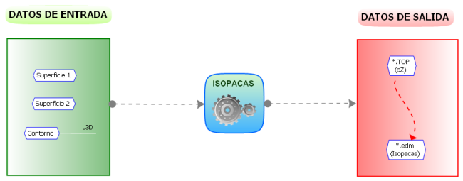
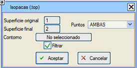
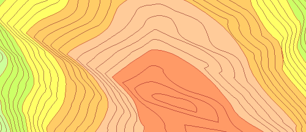

| |
|
İZOPAK (KALINLIK) HARİTALARI OLUŞTURMA
|
Bu seçenek, kotun kot farkıyla değiştirildiği .top formatında bir nokta dosyası oluşturur ve bu nedenle bu dosyanın üçgenlenmesi bir izopak haritasının oluşturulmasına olanak tanır. 
Bunun için şunları belirtmek gerekir:
Oluşturulan dosya, her iki yüzeyin tüm veri noktalarında, konturda ve yüzeyleri tanımlayan çizgilerin kesişiminde noktalar içerir. Her noktanın kotu, o konumdaki iki yüzey arasındaki kot farkıdır. Bu dosya TOPOGRAFYA'da yüklenir, üçgenlenir ve eşyükselti eğrileri elde edilirse, bu şekilde elde edilen eşyükselti eğrileri izopaklar, yani eşit kalınlık çizgileri olacaktır: 
|